Line Problems
1Write the equation (in all possible forms) of the line that passes through the points A = (1, 2) and B = (2, 5).
2Identify the type of triangle formed by the points: A = (6, 0), B = (3, 0) and C = (6, 3).
3Determine the slope and y-intercept of the line 3x + 2y − 7 = 0.
4 Find the equation of the line r which passes through the point A = (1, 5) and is parallel to the line s ≡ 2x + y + 2 = 0.
5 Find the equation of the line that passes through the point (2, −3) and is parallel to the straight line that joins the points (4, 1) and (−2, 2).
6 The points A = (−1, 3) and B = (3, −3) are vertices of an isosceles triangle ABC that has its apex C on the line 2x − 4y + 3 = 0. If AC and BC are the equal sides, calculate the coordinates of Point C.
7 The line r ≡ 3x + ny − 7 = 0 passes through the point A = (3, 2) and is parallel to the line s ≡ mx + 2y −13 = 0. Calculate the values of m and n.
8Given triangle ABC with coordinates A = (0, 0), B = (4, 0) and C = (4, 4), calculate the equation of the median that passes through the vertex C.
9A parallelogram has a vertex A = (8, 0), and the point of intersection of its two diagonals is M = (6, 2). If the other vertex is at the origin, calculate:
1 The other two vertices.
2 The equations of the diagonals.
3 The length of the diagonal.
1
Write the equation (in all possible forms) of the line that passes through the points A = (1, 2) and B = (2, 5).
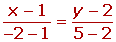
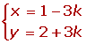
2
Identify the type of triangle formed by the points: A = (6, 0), B = (3, 0) and C = (6, 3).
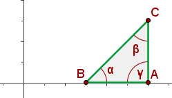
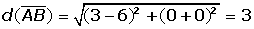

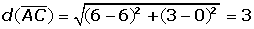

4
Find the equation of the line r which passes through the point A = (1, 5) and is parallel to the line s ≡ 2x + y + 2 = 0.
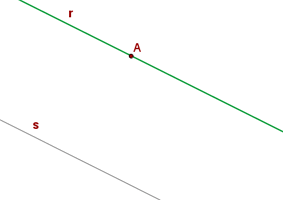
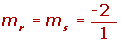
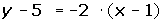
5
Find the equation of the line that passes through the point (2, −3) and is parallel to the straight line that joins the points (4, 1) and (−2, 2).
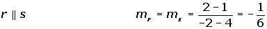
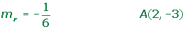
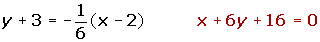
6
The points A = (−1, 3) and B = (3, −3) are vertices of an isosceles triangle ABC that has its apex C on the line 2x − 4y + 3 = 0. If AC and BC are the equal sides, calculate the coordinates of Point C.
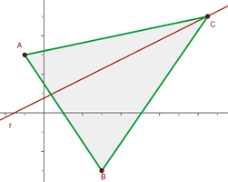
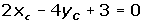
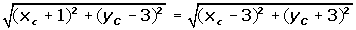
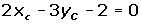
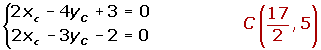
7
The line r ≡ 3x + ny − 7 = 0 passes through the point A = (3,2) and is parallel to the line s ≡ mx + 2y −13 = 0. Calculate the values of m and n.
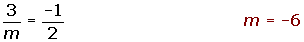
8
Given triangle ABC with coordinates A = (0, 0), B = (4, 0) and C = (4, 4), calculate the equation of the median that passes through the vertex C.
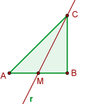
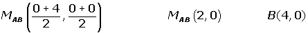
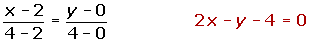
9
A parallelogram has a vertex A = (8, 0), and the point of intersection of its two diagonals is M = (6, 2). If the other vertex is at the origin, calculate:
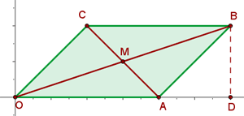
1 The other two vertices.
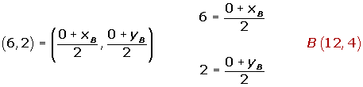
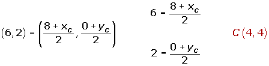
2 The equations of the diagonals.
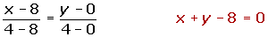
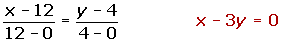
3 The length of the diagonal.
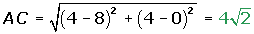
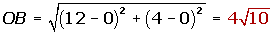